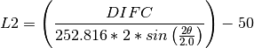

EnggCalibrateFull dialog.
Table of Contents
| Name | Direction | Type | Default | Description |
|---|---|---|---|---|
| Workspace | InOut | MatrixWorkspace | Mandatory | Workspace with the calibration run to use. The calibration will be applied on it. |
| VanadiumWorkspace | Input | MatrixWorkspace | Workspace with the Vanadium (correction and calibration) run. | |
| VanIntegrationWorkspace | Input | TableWorkspace | Results of integrating the spectra of a Vanadium run, with one column (integration result) and one row per spectrum. This can be used in combination with OutVanadiumCurveFits from a previous execution and VanadiumWorkspace to provide pre-calculated values for Vanadium correction. | |
| VanCurvesWorkspace | Input | MatrixWorkspace | A workspace2D with the fitting workspaces corresponding to the instrument banks. This workspace has three spectra per bank, as produced by the algorithm Fit. This is meant to be used as an alternative input VanadiumWorkspace for testing and performance reasons. If not given, no workspace is generated. | |
| OutDetPosTable | Output | TableWorkspace | Mandatory | A table with the detector IDs and calibrated detector positions and additional calibration information. The table includes: the old positions in V3D format (3D vector with x, y, z values), the new positions in V3D, the new positions in spherical coordinates, the change in L2, and the DIFA, DIFC and TZERO calibration parameters. |
| FittedPeaks | Output | TableWorkspace | Mandatory | Information on fitted peaks. The table has one row per calibrated detector contains. In each row, the parameters of all the peaks fitted are specified together with the the expected peak value (in d-spacing). The expected values are given in the field labelled ‘dSpacing’. When fitting back-to-back exponential functions, the ‘X0’ column has the fitted peak center. |
| Bank | Input | string | Which bank to calibrate: It can be specified as 1 or 2, or equivalently, North or South. See also SpectrumNumbers for a more flexible alternative to select specific detectors. Allowed values: [‘’, ‘North’, ‘South’, ‘Both: North, South’, ‘1’, ‘2’] | |
| SpectrumNumbers | Input | string | Sets the spectrum numbers for the detectors that should be considered in the calibration (all others will be ignored). This option cannot be used together with Bank, as they overlap. You can give multiple ranges, for example: “0-99”, or “0-9, 50-59, 100-109”. | |
| OutDetPosFilename | Input | string | Name of the file to save the pre-/post-calibrated detector positions - this saves the same information that is provided in the output table workspace (OutDetPosTable). Allowed extensions: [‘.csv’] | |
| RebinBinWidth | Input | string | -0.0005 | Before calculating the calibrated positions (fitting peaks) this algorithms re-bins the input sample data using a single bin width parameter. This option isto change the default bin width which is set to the value traditionally used for the Engin-X instrument |
| ExpectedPeaks | Input | dbl list | 3.12428,2.7057,1.91322,1.6316,1.56214,1.35285,1.24146,1.21003,1.1046,1.04143,0.95661,0.914694,0.901901,0.855618,0.825232,0.8158,0.781069,0.757748,0.750427,0.72313,0.704505,0.676426,0.661108,0.656229,0.63774,0.624855,0.620731,0.605014 | A list of dSpacing values where peaks are expected. |
| ExpectedPeaksFromFile | Input | string | Load from file a list of dSpacing values to be translated into TOF to find expected peaks. This takes precedence over ‘ExpectedPeaks’ if both options are given. Allowed extensions: [‘.csv’] |
Warning
This algorithm is being developed for a specific instrument. It might get changed or even removed without a notification, should instrument scientists decide to do so.
Allows to calibrate or correct for variations in detector position parameters. It does this by fitting the peaks for each of the selected bank’s detector indices, (using EnggFitPeaks v1 as a child algorithm) and using the resulting DIFC (GSAS calibration parameter) values to calibrate the detector positions.
This algorithm produces a table with calibration information, including calibrated or corrected positions and parameters. This calibration information that can be inspected and can also be used in other algorithms. The algorithm also applies the calibration on the input workspace. After running this algorithm the resulting calibration can be checked by visualizing the input workspace instrument in the instrument viewer and/or inspecting the output table values.
The output table has one row per detector where each row gives the
original position before calibration (as a V3D point, x-y-z values),
the new calibrated position (as V3D) and the calibrated spherical
co-ordinates (L2,  ,
,  ). It also gives the
variation in the L2 position, and the ‘DIFA’, ‘DIFC’ and ‘TZERO’
calibration parameters as used in GSAS and other Mantid algorithms.
). It also gives the
variation in the L2 position, and the ‘DIFA’, ‘DIFC’ and ‘TZERO’
calibration parameters as used in GSAS and other Mantid algorithms.
The result of the calibration (the output table given in OutDetPosTable) is accepted by both EnggCalibrate v1 and EnggFocus v1 which use the columns ‘Detector ID’ and ‘Detector Position’ of the table to correct the detector positions before focussing. The OutDetPosTable output table can also be used to apply the calibration calculated by this algorithm on any other workspace by using the algorithm ApplyCalibration v1.
In the output table the calibrated positions for every detector are found by calculating the L2 values from the DIFC values as follows:

where the DIFC values are obtained from the fitting of expected peaks. See the algorithm EnggFitPeaks v1 for details on how DIFC and other calibration parameters are calculated.
This algorithm expects as input/output workspace the long calibration run, which provides a decent pattern for every detector or pixel. The spectra of the workspace are corrected using data from a Vanadium run (passed in the VanadiumWorkspace property). These corrections include two steps: detector sensitivity correction and pixel-by-pixel correction on a per-bank basis. See also EnggFocus v1 where the same correction is applied. Similarly as in EnggFocus v1, it is possible to retrieve the curves fitted to the Vanadium run data for every bank by using the OutVanadiumCurveFits property.
Categories: Algorithm Index | Diffraction\Engineering
Python: EnggCalibrateFull.py (last modified: 2018-10-05)
Note
To run these usage examples please first download the usage data, and add these to your path. In MantidPlot this is done using Manage User Directories.
Example - Calculate corrected positions, using the DIFC parameter, for the EnginX instrument:
# Using a workspace with only one spectrum to keep this test small and fast.
# Normally you would use a long Ceria run file or similar
ws_name = 'ws_focussed'
Load('ENGINX00213855focussed.nxs', OutputWorkspace=ws_name)
# Using precalculated Vanadium corrections. To calculate from scrach see EnggVanadiumCorrections
van_integ_ws = Load('ENGINX_precalculated_vanadium_run000236516_integration.nxs')
van_curves_ws = Load('ENGINX_precalculated_vanadium_run000236516_bank_curves.nxs')
pos_table, peaks_info = EnggCalibrateFull(Workspace=ws_name,
VanIntegrationWorkspace=van_integ_ws,
VanCurvesWorkspace=van_curves_ws,
ExpectedPeaks=[1.097, 2.1], Bank='1')
det_id = pos_table.column(0)[0]
cal_pos = pos_table.column(2)[0]
print("Det ID: {}".format(det_id))
print("Calibrated position: (%.3f,%.3f,%.3f)" % (cal_pos.getX(), cal_pos.getY(), cal_pos.getZ()))
ws = mtd[ws_name]
posInWSInst = ws.getInstrument().getDetector(det_id).getPos()
print("Is the detector position calibrated now in the original workspace instrument? {}".format(cal_pos == posInWSInst))
Output:
Det ID: 100001
Calibrated position: (1.506,0.000,0.002)
Is the detector position calibrated now in the original workspace instrument? True
Example - Calculate corrected positions for EngingX, saving in a file:
import os, csv
ws_name = 'ws_focussed'
pos_filename = 'detectors_pos.csv'
# Note that this is a small file which is not very meaningful but simple enough for
# this test to run fast. Please user your (proper) run file.
Load('ENGINX00213855focussed.nxs', OutputWorkspace=ws_name)
# Using precalculated Vanadium corrections. To calculate from scrach see EnggVanadiumCorrections
van_integ_ws = Load('ENGINX_precalculated_vanadium_run000236516_integration.nxs')
van_curves_ws = Load('ENGINX_precalculated_vanadium_run000236516_bank_curves.nxs')
pos_table, peaks_info = EnggCalibrateFull(Workspace=ws_name,
VanIntegrationWorkspace=van_integ_ws,
VanCurvesWorkspace=van_curves_ws,
ExpectedPeaks=[1.097, 2.1], Bank='1',
OutDetPosFilename=pos_filename)
det_id = pos_table.column(0)[0]
pos = pos_table.column(2)[0]
print("Det ID: {}".format(det_id))
print("Calibrated position: ({0:.3f},{1:.3f},{2:.3f})".format(pos.getX(),pos.getY(),pos.getZ()))
print("Got details on the peaks fitted for {0:d} detector(s)".format(peaks_info.rowCount()))
print("Was the file created? {}".format(os.path.exists(pos_filename)))
with open(pos_filename) as csvf:
reader = csv.reader(csvf, dialect='excel')
next(reader)
calibOK = True
for i,row in enumerate(reader):
cal_pos = pos_table.column(2)[i]
calibOK = calibOK and (abs(float(row[4]) - cal_pos.getX()) < 1e-6) and\
(abs(float(row[5]) - cal_pos.getY()) < 1e-6) and\
(abs(float(row[6]) - cal_pos.getZ()) < 1e-6)
if not calibOK: break
print("Does the calibration file have the expected values? {}".format(calibOK))
Output:
Det ID: 100001
Calibrated position: (1.506,0.000,0.002)
Got details on the peaks fitted for 1 detector(s)
Was the file created? True
Does the calibration file have the expected values? True
{kind=link}